🎨 退稅證明 NFT 預覽
TaxCoin MVP - Tax Claim Certificate NFT Collection
退稅證明 NFT #TC001
待審核
待審核

狀態碼
STATUS_PENDING (0)
退稅金額
50 TWD
原始消費
1,000 TWD
商家
全聯福利中心
tax-claim-0.svg
- 灰色調設計（代表處理中）
- 時鐘動畫旋轉
- 虛線圓環旋轉
退稅證明 NFT #TC002
已核准
已核准

狀態碼
STATUS_APPROVED (1)
退稅金額
75 TWD
原始消費
1,500 TWD
商家
家樂福
tax-claim-1.svg
- 綠色漸層（代表成功）
- 大對勾符號
- 閃爍星星效果
- 認證標記
退稅證明 NFT #TC003
已拒絕
已拒絕

狀態碼
STATUS_REJECTED (2)
退稅金額
0 TWD
拒絕原因
收據不清晰
tax-claim-2.svg
- 紅色漸層（代表拒絕）
- X 錯誤符號
- 警告三角標記
- 脈衝警示效果
退稅證明 NFT #TC004
已發放
已發放

狀態碼
STATUS_DISBURSED (3)
退稅金額
100 TWD
TaxCoin 數量
100 TC
發放日期
2025-10-24
tax-claim-3.svg
- 紫色漸層（代表完成）
- T$ TaxCoin 符號
- 金幣堆疊效果
- 成功徽章
- 飄落金幣動畫
📋 NFT 狀態對照表
| 狀態碼 | 狀態名稱 | 圖片檔案 | 主色調 | 說明 |
|---|---|---|---|---|
| 0 | STATUS_PENDING | tax-claim-0.svg | 灰色 (#94A3B8) | 申請已提交，等待審核 |
| 1 | STATUS_APPROVED | tax-claim-1.svg | 綠色 (#10B981) | 申請已通過審核 |
| 2 | STATUS_REJECTED | tax-claim-2.svg | 紅色 (#EF4444) | 申請被拒絕 |
| 3 | STATUS_DISBURSED | tax-claim-3.svg | 紫色 (#8B5CF6) | TaxCoin 已發放 |
🔄 NFT 狀態變化流程
1
用戶提交申請
→ 鑄造 NFT，status = 0 (待審核)
→ 顯示 tax-claim-0.svg (灰色時鐘)
→ 鑄造 NFT，status = 0 (待審核)
→ 顯示 tax-claim-0.svg (灰色時鐘)
2
管理員審核通過
→ 更新 NFT，status = 1 (已核准)
→ 圖片自動切換為 tax-claim-1.svg (綠色對勾)
→ 更新 NFT，status = 1 (已核准)
→ 圖片自動切換為 tax-claim-1.svg (綠色對勾)
3
系統發放 TaxCoin
→ 更新 NFT，status = 3 (已發放)
→ 圖片自動切換為 tax-claim-3.svg (紫色 T$)
→ 更新 NFT，status = 3 (已發放)
→ 圖片自動切換為 tax-claim-3.svg (紫色 T$)
✕
如果審核未通過
→ 更新 NFT，status = 2 (已拒絕)
→ 圖片自動切換為 tax-claim-2.svg (紅色 X)
→ 更新 NFT，status = 2 (已拒絕)
→ 圖片自動切換為 tax-claim-2.svg (紅色 X)